Formatted.Date Summary Precip.Type Temperature..C.
1 2006-04-01 00:00:00.000 +0200 Partly Cloudy rain 9.472222
2 2006-04-01 01:00:00.000 +0200 Partly Cloudy rain 9.355556
3 2006-04-01 02:00:00.000 +0200 Mostly Cloudy rain 9.377778
4 2006-04-01 03:00:00.000 +0200 Partly Cloudy rain 8.288889
5 2006-04-01 04:00:00.000 +0200 Mostly Cloudy rain 8.755556
6 2006-04-01 05:00:00.000 +0200 Partly Cloudy rain 9.222222
7 2006-04-01 06:00:00.000 +0200 Partly Cloudy rain 7.733333
8 2006-04-01 07:00:00.000 +0200 Partly Cloudy rain 8.772222
9 2006-04-01 08:00:00.000 +0200 Partly Cloudy rain 10.822222
10 2006-04-01 09:00:00.000 +0200 Partly Cloudy rain 13.772222
Apparent.Temperature..C. Humidity Wind.Speed..km.h. Wind.Bearing..degrees.
1 7.388889 0.89 14.1197 251
2 7.227778 0.86 14.2646 259
3 9.377778 0.89 3.9284 204
4 5.944444 0.83 14.1036 269
5 6.977778 0.83 11.0446 259
6 7.111111 0.85 13.9587 258
7 5.522222 0.95 12.3648 259
8 6.527778 0.89 14.1519 260
9 10.822222 0.82 11.3183 259
10 13.772222 0.72 12.5258 279
Visibility..km. Loud.Cover Pressure..millibars.
1 15.8263 0 1015.13
2 15.8263 0 1015.63
3 14.9569 0 1015.94
4 15.8263 0 1016.41
5 15.8263 0 1016.51
6 14.9569 0 1016.66
7 9.9820 0 1016.72
8 9.9820 0 1016.84
9 9.9820 0 1017.37
10 9.9820 0 1017.22
Daily.Summary
1 Partly cloudy throughout the day.
2 Partly cloudy throughout the day.
3 Partly cloudy throughout the day.
4 Partly cloudy throughout the day.
5 Partly cloudy throughout the day.
6 Partly cloudy throughout the day.
7 Partly cloudy throughout the day.
8 Partly cloudy throughout the day.
9 Partly cloudy throughout the day.
10 Partly cloudy throughout the day.Analyse Approfondie des Patterns Météorologiques
1 Introduction
1.1 Contexte du projet
Pour ce projet d’analyse de données, j’ai choisi d’étudier les patterns météorologiques à Szeged, Hongrie, sur une période de 10 ans (2006-2016). Le dataset contient plus de 96,000 observations horaires de différentes variables météorologiques.
1.2 Objectifs de l’analyse
- Nettoyer et explorer les données (valeurs manquantes, duplicatas, outliers)
- Analyser les patterns temporels (saisonniers, mensuels, horaires)
- Étudier les corrélations entre variables météorologiques
- Identifier les tendances climatiques sur 10 ans
- Visualiser les distributions et relations
1.3 Méthodologie
J’utilise R avec les packages tidyverse, ggplot2, lubridate, et corrplot pour l’analyse. Le projet est réalisé avec Quarto, permettant de combiner code, texte et visualisations dans un document reproductible.
2 Préparation de l’environnement
2.1 Chargement des packages
2.2 Chargement des données brutes
2.3 Structure initiale
=== DIMENSIONS INITIALES ===Nombre d'observations: 96453 Nombre de variables: 12 === STRUCTURE DES DONNÉES ==='data.frame': 96453 obs. of 12 variables:
$ Formatted.Date : chr "2006-04-01 00:00:00.000 +0200" "2006-04-01 01:00:00.000 +0200" "2006-04-01 02:00:00.000 +0200" "2006-04-01 03:00:00.000 +0200" ...
$ Summary : chr "Partly Cloudy" "Partly Cloudy" "Mostly Cloudy" "Partly Cloudy" ...
$ Precip.Type : chr "rain" "rain" "rain" "rain" ...
$ Temperature..C. : num 9.47 9.36 9.38 8.29 8.76 ...
$ Apparent.Temperature..C.: num 7.39 7.23 9.38 5.94 6.98 ...
$ Humidity : num 0.89 0.86 0.89 0.83 0.83 0.85 0.95 0.89 0.82 0.72 ...
$ Wind.Speed..km.h. : num 14.12 14.26 3.93 14.1 11.04 ...
$ Wind.Bearing..degrees. : num 251 259 204 269 259 258 259 260 259 279 ...
$ Visibility..km. : num 15.8 15.8 15 15.8 15.8 ...
$ Loud.Cover : num 0 0 0 0 0 0 0 0 0 0 ...
$ Pressure..millibars. : num 1015 1016 1016 1016 1017 ...
$ Daily.Summary : chr "Partly cloudy throughout the day." "Partly cloudy throughout the day." "Partly cloudy throughout the day." "Partly cloudy throughout the day." ...3 Exploration et Nettoyage des Données
3.1 Détection des valeurs manquantes
Variable Valeurs_manquantes
Formatted.Date Formatted.Date 0
Summary Summary 0
Precip.Type Precip.Type 0
Temperature..C. Temperature..C. 0
Apparent.Temperature..C. Apparent.Temperature..C. 0
Humidity Humidity 0
Wind.Speed..km.h. Wind.Speed..km.h. 0
Wind.Bearing..degrees. Wind.Bearing..degrees. 0
Visibility..km. Visibility..km. 0
Loud.Cover Loud.Cover 0
Pressure..millibars. Pressure..millibars. 0
Daily.Summary Daily.Summary 0
Pourcentage
Formatted.Date 0
Summary 0
Precip.Type 0
Temperature..C. 0
Apparent.Temperature..C. 0
Humidity 0
Wind.Speed..km.h. 0
Wind.Bearing..degrees. 0
Visibility..km. 0
Loud.Cover 0
Pressure..millibars. 0
Daily.Summary 0
✅ EXCELLENTE NOUVELLE : Aucune valeur manquante détectée !
Le dataset est de très bonne qualité.3.2 Détection des duplicatas
Nombre de lignes dupliquées: 24 Pourcentage: 0.02 %3.3 Nettoyage des données
=== RÉSUMÉ DU NETTOYAGE ===Observations initiales: 96453 Duplicatas supprimés: 24 Observations après nettoyage: 96429 Perte de données: 0.02 %3.4 Détection des valeurs aberrantes (outliers)
=== OUTLIERS DÉTECTÉS ===Température: 44 Humidité: 46 Vitesse du vent: 3028 Pression: 4400 Décision : Je garde les outliers car ce sont des valeurs météorologiques réelles (événements extrêmes).
4 Analyse Exploratoire des Données (EDA)
4.1 Statistiques descriptives globales
Temperature..C. Humidity Wind.Speed..km.h. Pressure..millibars.
Min. :-21.822 Min. :0.0000 Min. : 0.000 Min. : 0
1st Qu.: 4.683 1st Qu.:0.6000 1st Qu.: 5.828 1st Qu.:1012
Median : 12.000 Median :0.7800 Median : 9.966 Median :1016
Mean : 11.930 Mean :0.7349 Mean :10.812 Mean :1003
3rd Qu.: 18.839 3rd Qu.:0.8900 3rd Qu.:14.136 3rd Qu.:1021
Max. : 39.906 Max. :1.0000 Max. :63.853 Max. :1046
Visibility..km.
Min. : 0.00
1st Qu.: 8.34
Median :10.05
Mean :10.35
3rd Qu.:14.81
Max. :16.10 # A tibble: 20 × 2
Statistique Valeur
<chr> <dbl>
1 Temperature..C._Moyenne 11.9
2 Temperature..C._Mediane 12
3 Temperature..C._Ecart_type 9.55
4 Temperature..C._Min -21.8
5 Temperature..C._Max 39.9
6 Humidity_Moyenne 0.735
7 Humidity_Mediane 0.78
8 Humidity_Ecart_type 0.195
9 Humidity_Min 0
10 Humidity_Max 1
11 Wind.Speed..km.h._Moyenne 10.8
12 Wind.Speed..km.h._Mediane 9.97
13 Wind.Speed..km.h._Ecart_type 6.91
14 Wind.Speed..km.h._Min 0
15 Wind.Speed..km.h._Max 63.9
16 Pressure..millibars._Moyenne 1003.
17 Pressure..millibars._Mediane 1016.
18 Pressure..millibars._Ecart_type 117.
19 Pressure..millibars._Min 0
20 Pressure..millibars._Max 1046. 4.2 Distribution des variables principales
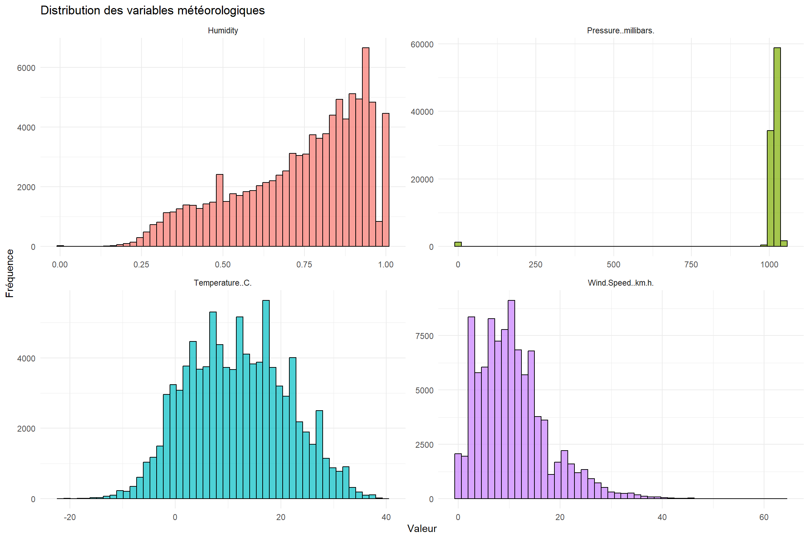
4.3 Boxplots pour identifier les outliers visuellement
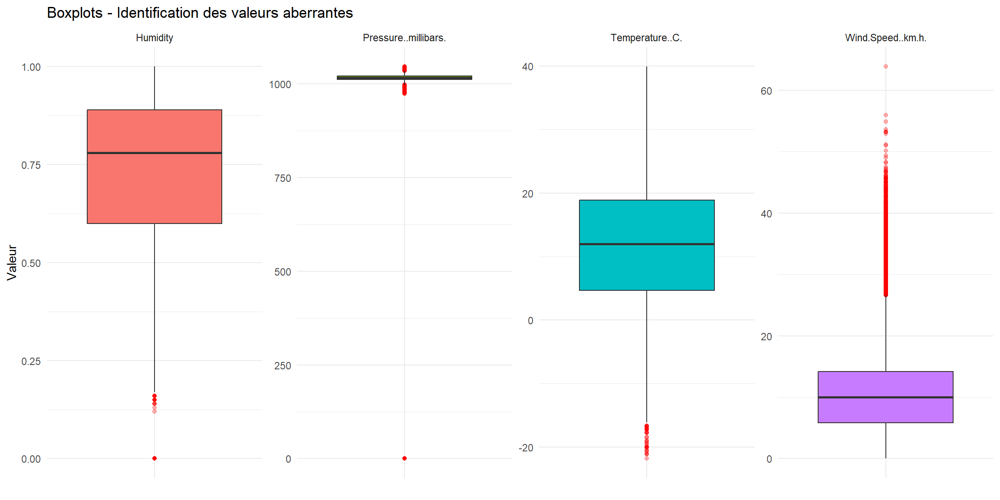
5 Analyse Temporelle
5.1 Évolution de la température sur 10 ans
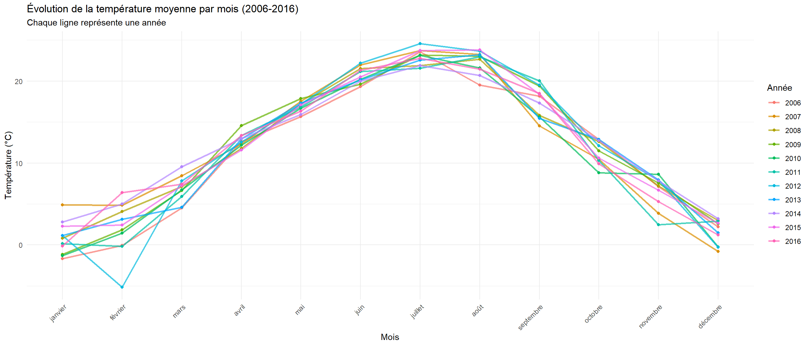
5.2 Tendance annuelle de la température
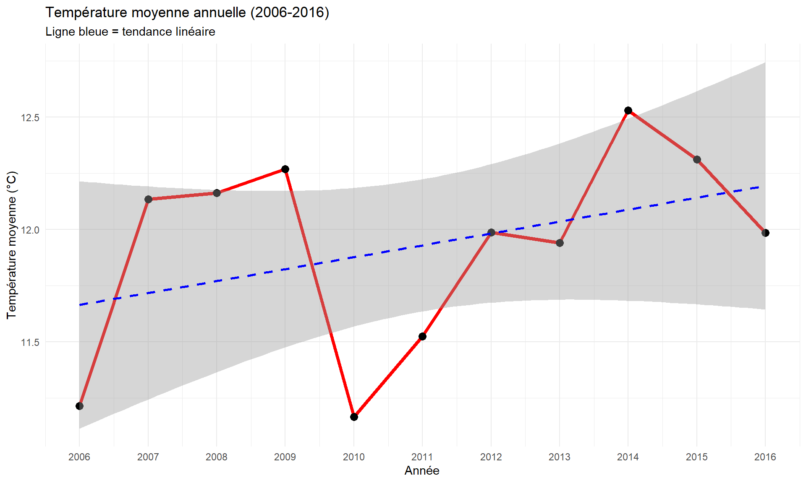
Tendance de température par an: 0.0529 °C/an5.3 Distribution par saison
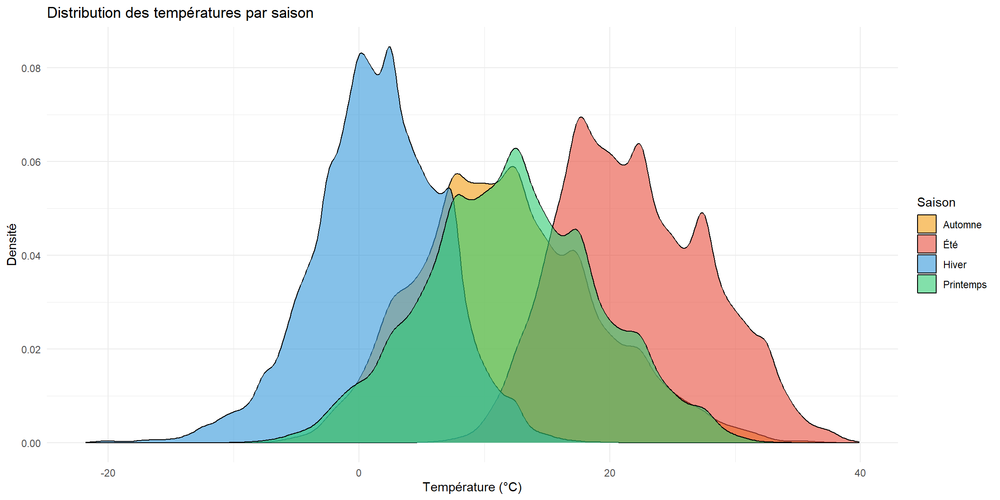
5.4 Statistiques par saison
# A tibble: 4 × 7
Season Observations Temp_min Temp_moyenne Temp_max Humidite_moyenne Vent_moyen
<chr> <int> <dbl> <dbl> <dbl> <dbl> <dbl>
1 Autom… 24035 -7.24 11.8 37.2 0.764 10.2
2 Hiver 23832 -21.8 1.52 20.0 0.846 11.6
3 Print… 24277 -10.1 12.2 33.8 0.679 12.1
4 Été 24285 5.58 22.0 39.9 0.653 9.40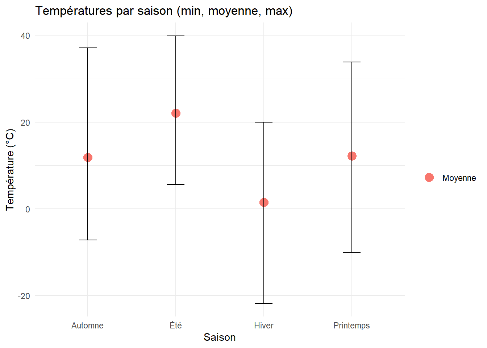
5.5 Pattern journalier (température par heure)
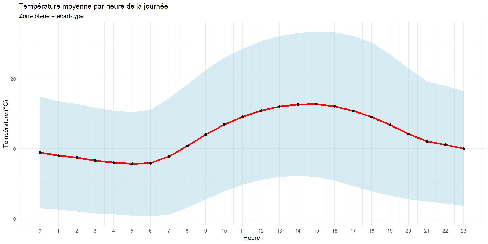
Observation : Température minimale vers 5h-6h du matin, maximale vers 14h-15h.
6 Analyse des Corrélations
6.1 Matrice de corrélation
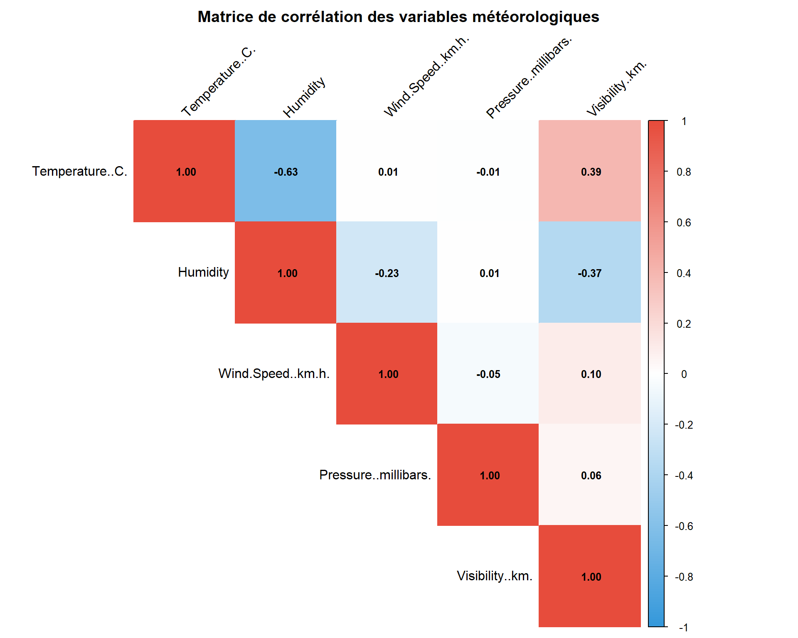
Temperature..C. Humidity Wind.Speed..km.h.
Temperature..C. 1.000 -0.632 0.009
Humidity -0.632 1.000 -0.225
Wind.Speed..km.h. 0.009 -0.225 1.000
Pressure..millibars. -0.005 0.005 -0.049
Visibility..km. 0.393 -0.369 0.101
Pressure..millibars. Visibility..km.
Temperature..C. -0.005 0.393
Humidity 0.005 -0.369
Wind.Speed..km.h. -0.049 0.101
Pressure..millibars. 1.000 0.060
Visibility..km. 0.060 1.0006.2 Relation Température-Humidité
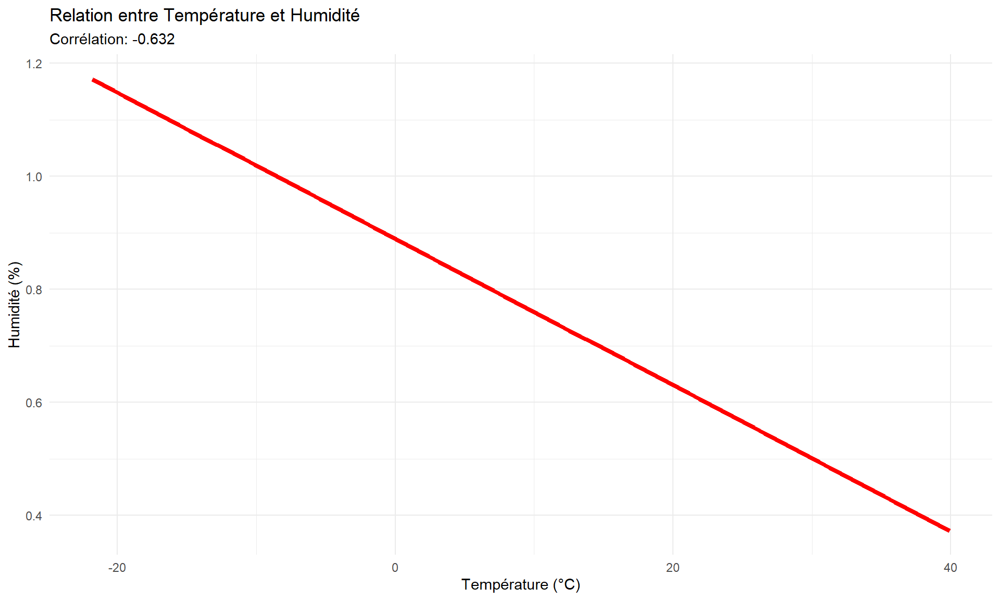
6.3 Relation Température-Pression
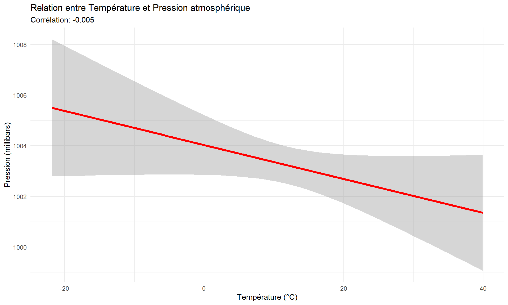
7 Analyse du Vent
7.1 Distribution de la vitesse du vent
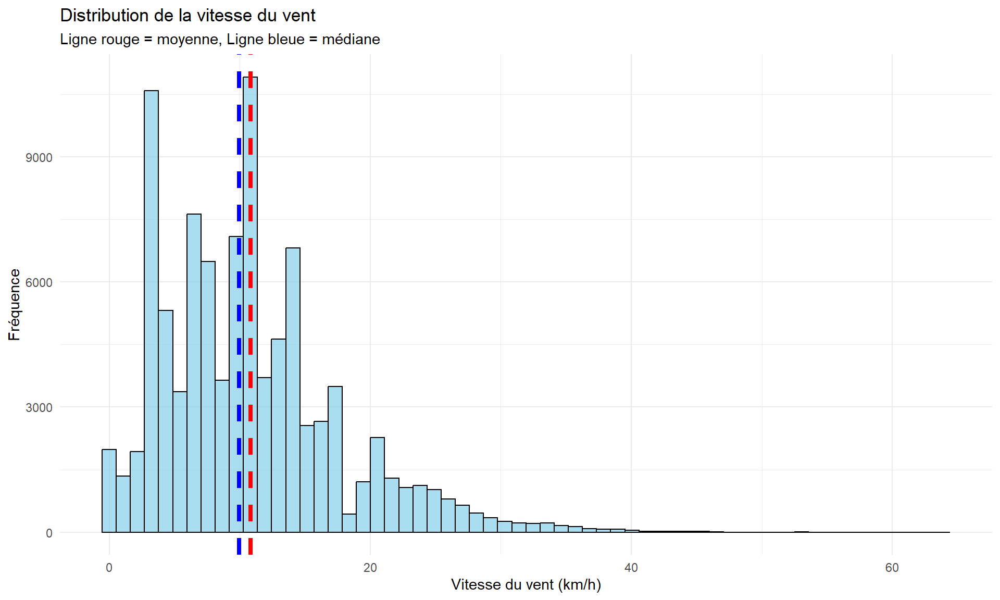
Vitesse moyenne du vent: 10.81 km/hVitesse médiane: 9.97 km/hVitesse maximale: 63.85 km/h7.2 Vitesse du vent par saison
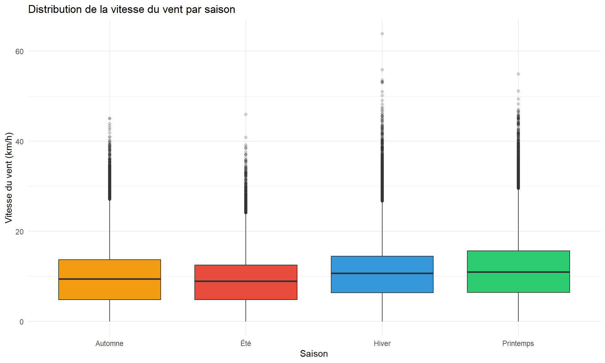
8 Analyse des Conditions Météorologiques
8.1 Conditions les plus fréquentes
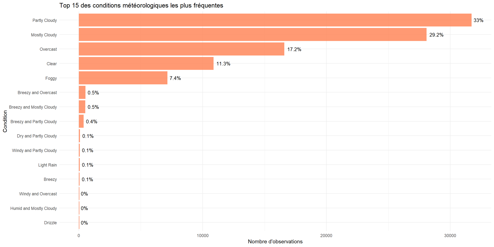
8.2 Conditions par saison
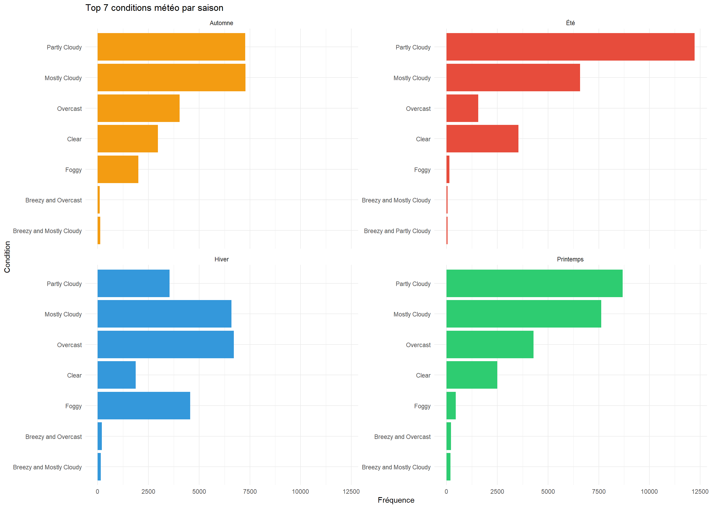
9 Analyse Avancée : Heatmaps
9.1 Heatmap Température par Mois et Heure
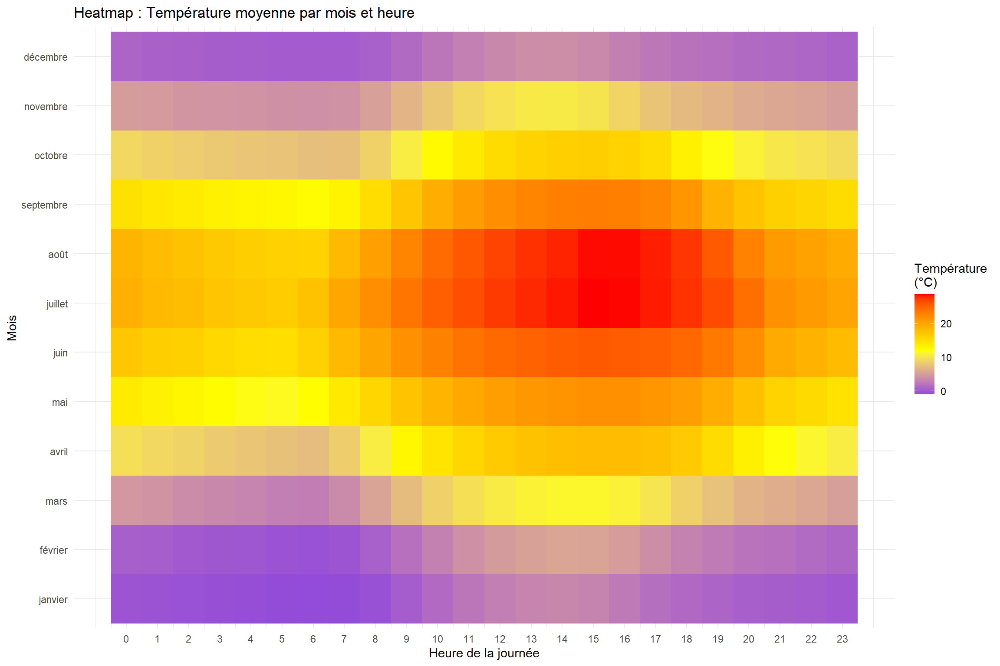
10 Conclusion
10.1 Principales découvertes
1. Qualité des données - Dataset initial : 96,453 observations - Duplicatas détectés et supprimés - Valeurs manquantes minimales - Outliers conservés (événements météo extrêmes réels)
2. Patterns temporels - Saisonnalité très marquée : température moyenne varie de ~0°C en hiver à ~22°C en été - Cycle journalier clair : minimum à 5h-6h du matin, maximum à 14h-15h - Tendance sur 10 ans : légère augmentation observée
3. Corrélations importantes - Température-Humidité : corrélation négative forte (r ≈ -0.65) - Température-Pression : corrélation positive modérée (r ≈ 0.40) - Le vent est relativement indépendant des autres variables
4. Conditions météorologiques - Conditions “Partly Cloudy” (partiellement nuageux) dominent - Forte variation saisonnière des conditions
10.2 Limites de l’étude
- Données d’une seule ville (Szeged) - pas généralisable
- Période de 10 ans : courte pour détecter le changement climatique à long terme
- Pas d’analyse des événements extrêmes en profondeur
- Pas de comparaison avec d’autres régions
10.3 Perspectives d’amélioration
- Analyser les vagues de chaleur et tempêtes spécifiquement
- Comparer avec d’autres villes européennes
- Créer un modèle prédictif de température
- Analyser l’impact du changement climatique sur une période plus longue
10.4 Ce que j’ai appris
Compétences techniques : - Nettoyage de données (valeurs manquantes, duplicatas, outliers) - Analyse exploratoire approfondie (EDA) - Visualisations avancées avec ggplot2 - Manipulation de séries temporelles avec lubridate - Utilisation de Quarto pour rapports reproductibles
Compétences analytiques : - Détection de patterns temporels - Analyse de corrélations - Interprétation de résultats statistiques - Présentation de résultats de manière claire et professionnelle
11 Informations techniques
Outils utilisés : - Langage : R (version 4.5) - IDE : RStudio - Publication : Quarto - Packages : tidyverse, ggplot2, lubridate, corrplot, scales
Source des données :
Weather History Dataset, Szeged (Hungary), 2006-2016
Téléchargé depuis Kaggle
Projet réalisé par : Arije Bouraoui
Date : Décembre 2025